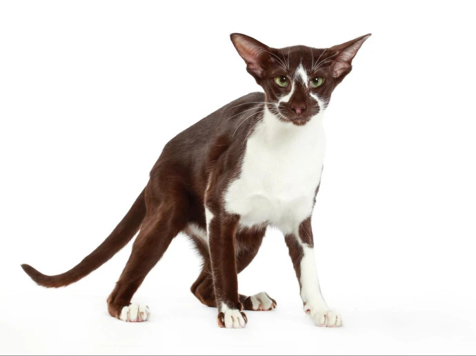

Маленький сайт о больших характерах
Интересные породы кошек
Кошки живут рядом с человеком тысячи лет, но каждая порода до сих пор умеет удивлять: внешностью, привычками, голосом и своим особым способом просить внимания.
Смотреть породыО кошках
Почему они такие разные
Породы кошек отличаются не только размером и шерстью. У одних звонкий голос и сильная привязанность к человеку, другие спокойнее и величественнее, третьи выглядят необычно из-за коротких лап или огромного пушистого хвоста. На этом сайте собраны три яркие породы: ориентальная кошка, манчкин и мейн-кун.
Породы